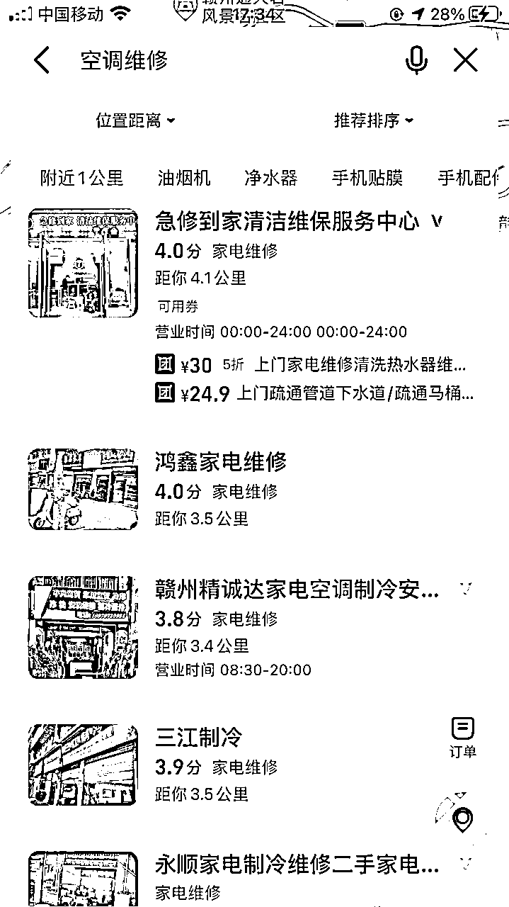
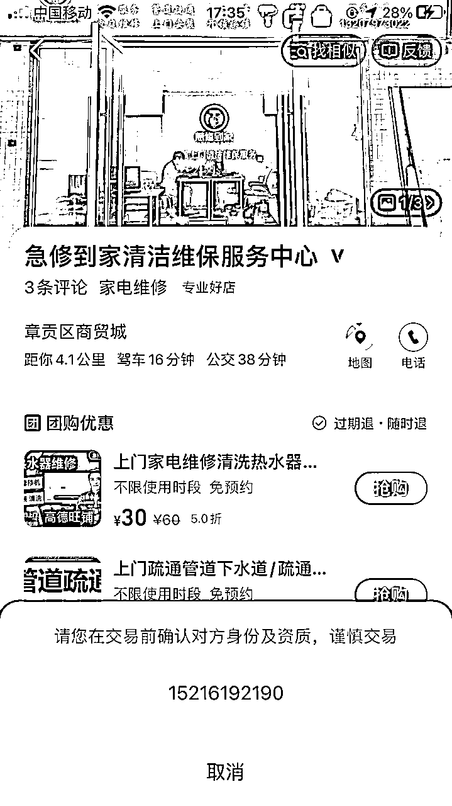
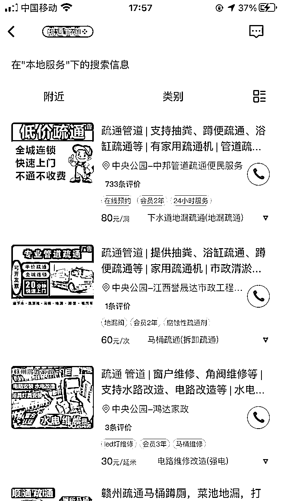
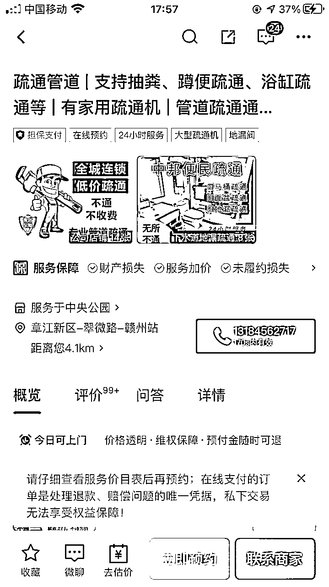
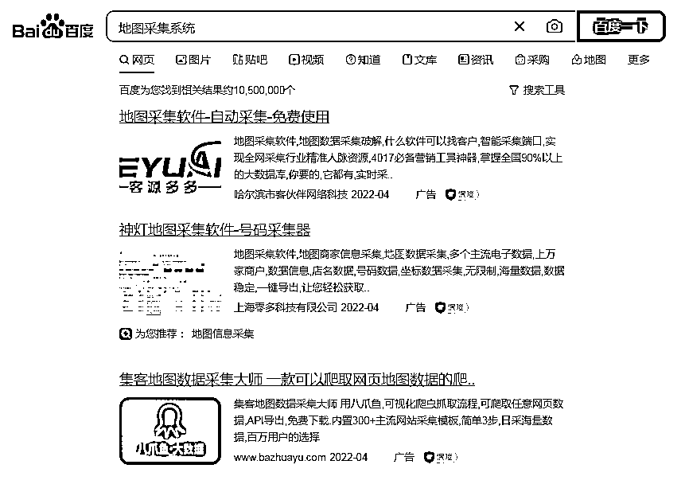
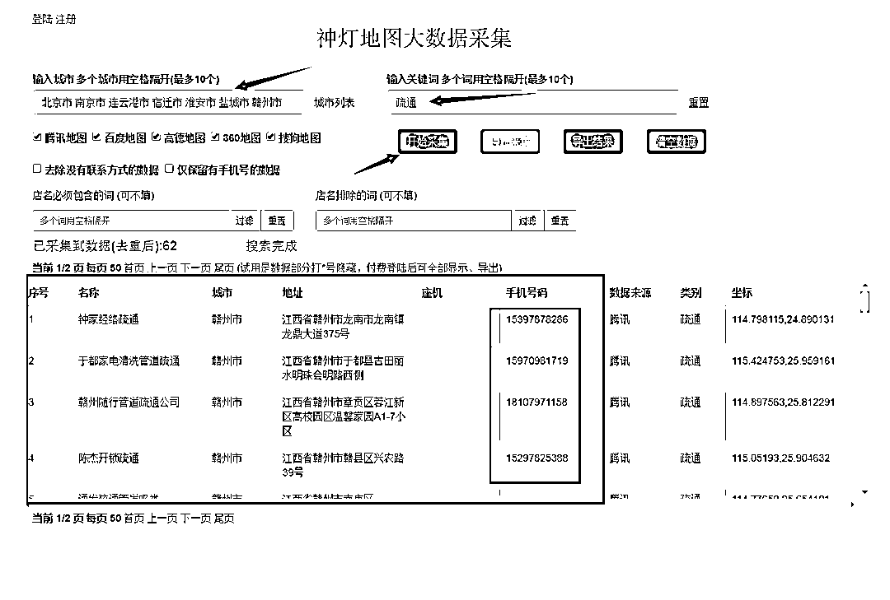
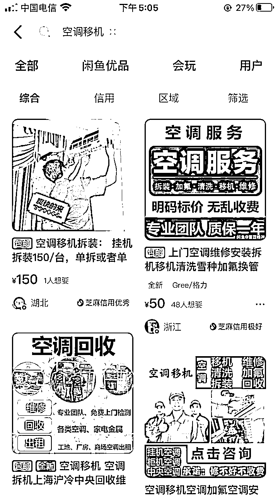
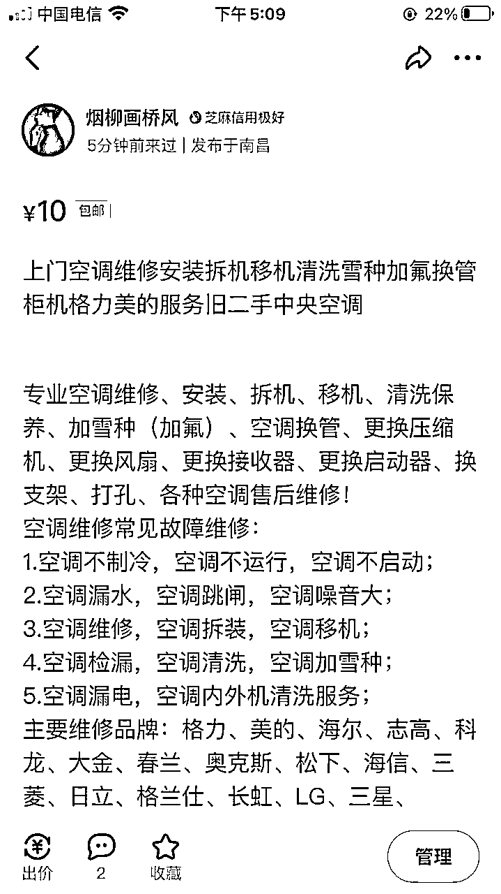
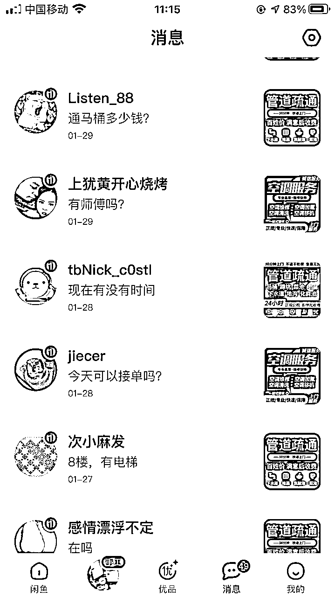
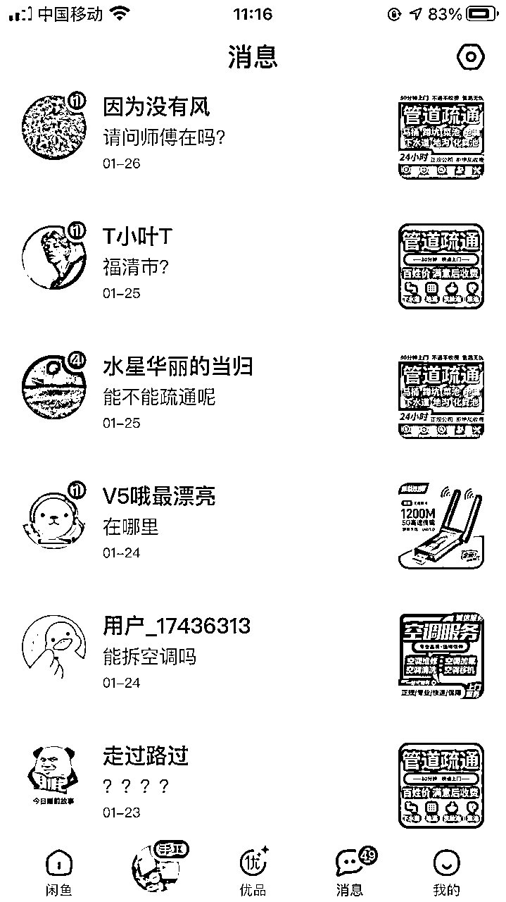

来源：https://n28vbku1px.feishu.cn/docx/LSvldmb3QojJhSx1yk3cytnAn0f
大家好，我是蓝狐。
互联网上，有些项目看着不起眼，没什么人去做，但事实上是非常赚钱的。
像很多人找项目，都想一口气吃成一个胖子，追求速成，你想天上掉馅饼，但哪有那么好的事呢？
很多大佬的背后，都暗藏着不为人知的艰苦奋斗。都说成功者不一定是聪明人，但肯定是勤奋的人，深以为然。
相信大家都知道，只要有需求就会有市场，就看我们怎么去整合资源。
像空调移机，空调拆装，空调维修，疏通管道，热水器清洗等等，这些服务都是非常刚需的。
下面蓝狐给大家讲一下如果通过刚需服务整合资源变现，这个方法有人操作了2个月，纯利润30万，是蓝狐身边的活生生的例子。
那么有人会说到了，全国各地的师傅那么多，该怎么去寻找他们的联系方式呢，其实这个也比较简单，下面蓝狐就给大家介绍三种方式。
第一，直接打开地图来，搜一下相关行业，有一些有门店的，上面都会有相关师傅的联系方式，比如搜空调维修。


第二，我们可以去58同城，赶集网等一些服务类型的平台寻找相关行业师傅，比如我们在58同城搜疏通管道。


第三，可能上面两个方法效率会比较慢，那么有个最简单的办法，有专门的客户资源采集系统，可以一键采集全国的师傅联系方式，还可以导出表格，具体方法可以百度一下地图采集系统。


我们搞定了师傅的联系方式有了，那么下一步我们需要做什么呢？
第一，师傅怎么进行接单，接单流程？
前期可以建立微信群，群名称参考（地区名+行业+师傅名字），这样是为了方便进行搜索，直接进行派单，也方便进行实时跟踪，和收米，师傅回单，我们进行回访，直到这个单子结束，为了派单流程化，派单参考格式如下：
客户姓名：xxx
客户电话：188xxxx7788
客户地址：江西省赣州市xxxx
维修项目：空调移机
费用金额：260元
第二，怎么筛选出优质的师傅呢？
我们可以按周期对师傅进行评估，比如一个月为周期，评估师傅的接单数，上门效率，客户投诉率，客户满意度，这个我们可以电话回访，最后看一下数据反馈，做好相关统计，进行打分，数据好的自然就是优质师傅，这样我们也放心。
第三，利润怎么分成和奖惩措施？
利润分成，比如五五，四六，三七开，这个我们可以自己衡量一下标准，取一个合适的比值。
我们主要是接单，所以让师傅多拿一点也是应该的。
或者也是进行区域划分，一线城市，五五分，一线城市费用高，竞争大，五五分双方都愿意；二线城市，四六分，师傅拿六成，这样师傅也高兴；三线城市，三七分，师傅拿七成，因为费用相对于偏低。
奖惩措施，遇到上门不及时，或者造成客户投诉，先警告二次，最后还是不行的话，直接取消合作，还有发现私自收米的，直接拉黑。
最后，还有一些售后问题，就是是否有保修，保修多久，前期就要对接好。
找客户之前，我们首先是要做的是进行市场调查，调查一下行情，价格范围多少。
比如拆装一台1.5P挂机多少钱，单独安装多少钱，高空作业费多少楼开始收取，费用怎么算等等，打铁还得自身硬，这样自己心里才有底。
怎么进行市场调查呢，我们完全可以在寻找师傅的时候一起做了这件事，一举两得。
搞定了以上的几点，接下来我们要开始接单了，重点讲咸鱼，也可以去多个平台进行发布需求，比如、转转、58同城、赶集网等。
我们拿咸鱼举例，注册号账号，最好要芝麻信用分授权，这样客户信任度比较高，然后先养个两三天的号，填写好相关信息资料，打造专业人设。
素材可以去tao宝，搜集一下图片和文案，为了避免检测出抄袭，我们可以用简单的作图软件进行处理，比如美图秀秀，创客贴，稍微添加一些元素，进行修饰，这样就不怕检测抄袭。
文案可以参考同行，找出几个不错的文案，然后进行整合，稍微修改一下就可以了，尽量要把我们的服务项目写全面。
标题要尽量填满，需要包含一些关键词，我们做的是上门服务类型，关键词要有“上门”，空调相关的，可以空调维修，拆装，移机，清洗，加氟，柜机，gua机等等关键词，尽量全面一些，增加曝光率。
价格可以采取低价方式，比如9.9元，19.9元这样，这样的好处，可以增加曝光，但是要在文案中写明，具体价格咨询客服。
发布商品，要按照每个省、市、区/县这样分别发布，最小单位是区/县，每一个区/县发布一个商品。
打个比方，江西省赣州市有18个区/县，那么就需要发布18个商品。
我们要选择中午十二点和晚上七点左右发布，这个时候大家都有时间，曝光度也更高。
不是咸鱼玩家或者咸鱼pro版只能发布50个商品，不过一个人可以注册6个咸鱼号，相当于可以发布300个商品，然后可以用家人朋友的身份多开账号，再慢慢地可以邀请为pro版，pro版可以发布500个商品。
这是一种yin流方式，就是通过一些招聘软件，比如boss、智联、前程无忧等，去发布一些jian职招聘。
利用他们的空闲时间，也在咸鱼上发布一些空调维修、疏通管道等需求，然后给他们一定的利润分成，给他们提供培训，他们负责接单就好，从而达到利润最大化。
相当于借用了他们的咸鱼号，达到了双赢的局面。


流量有了，还需要有专业的接单客服微信号，朋友圈进行优化打造，发布一些行业相关的信息，一些小知识，客户相关的反馈，再输出一些正能量的内容。
咨询的人一多，一个个单独打字回复效率太低了！
提前整好话术，对于我们的效率和转化率能有大大的提升，举例如下：
客户提问：你好，空调移机怎么收费？
回复话术：你好，具体是看空调规格哦
挂机移机是280元；
2P柜机移机是380元；
3P柜机移机是450元；
其他空调规格另外议价哦；
客户提问：高空作业费怎么收取？
回复话术：亲，4楼以上没有阳台是100元哦
……
也可以提前设置好自动回复，可以设置电话，这样没有及时回复客户会电话咨询，避免漏单。


1、一定要筛选出优质的师傅，和靠谱的人一起合作，往往会得心应手，事半功倍
2、打造私域流量很重要，让客户加到微信，只要我们服务好，专业性强，客户有需求第一还是会找到我们，还会转介绍。
最后可能有的人会问，难道老板自己不会操作吗？我们去做还有市场吗？
这里要强调的是，有需求肯定就有市场，只要我们话术好，会沟通，懂yin流，懂信息差，执行力强，这都是我们的优势所在。